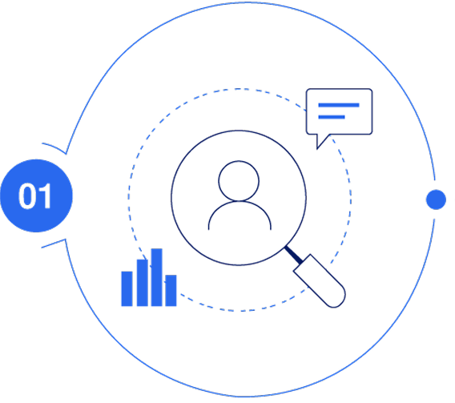
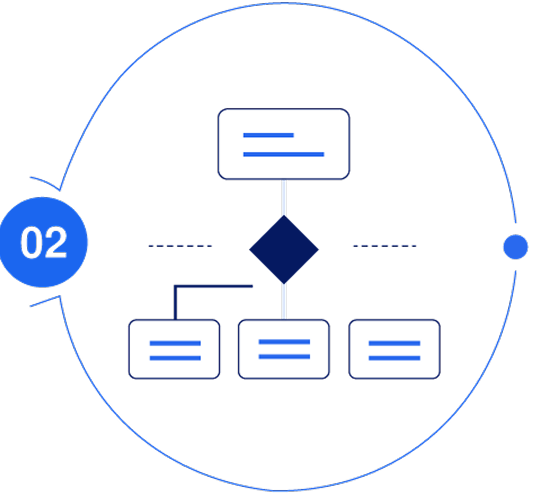
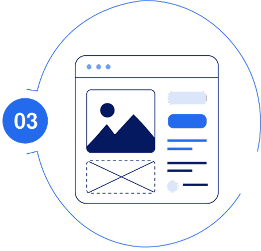
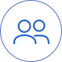
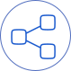
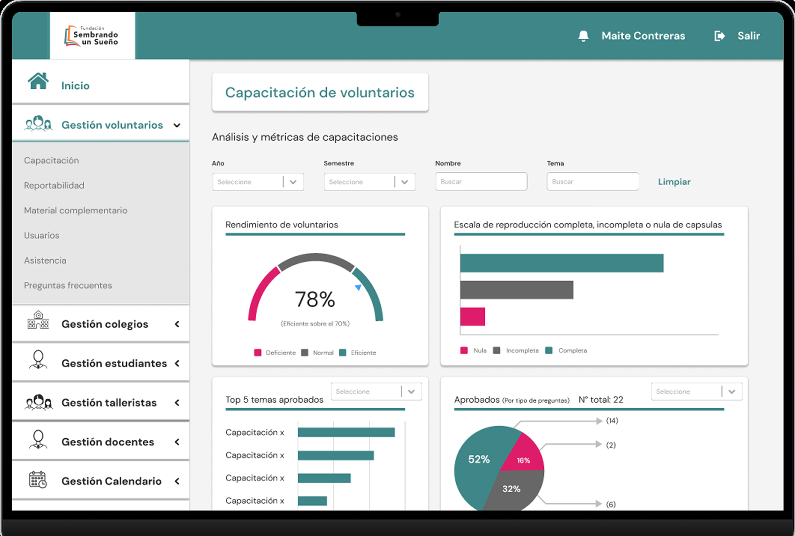

Observar
Identificamos necesidades de coordinación, acceso a información y administración interna.
BASTIÁN ARAVENA
ORTIZ
Plataforma interna diseñada para centralizar la coordinación de voluntarios, colegios, programas y materiales, facilitando la gestión diaria y la comunicación dentro de la fundación.

Proyecto desarrollado durante mi práctica profesional en Fundación Sembrando un Sueño.
Investigación inicial, arquitectura de información, diseño UX/UI y prototipado en Figma.
3 meses.
Figma, Illustrator y Photoshop.
La fundación coordinaba voluntarios, colegios, materiales y actividades mediante herramientas dispersas como Drive y WhatsApp.
Esto dificultaba centralizar procesos, mantener trazabilidad y ordenar la comunicación interna.
¿Cómo podríamos diseñar una intranet clara y funcional que reuniera la gestión de usuarios, programas, documentos y comunicación en una sola plataforma?

Identificamos necesidades de coordinación, acceso a información y administración interna.

Definimos usuarios, módulos, jerarquías y flujos para estructurar la plataforma.

Tradujimos esa estructura en una intranet clara, modular y escalable en Figma.
Unificamos tareas, materiales y comunicaciones en un solo ecosistema digital.

Consideramos distintos perfiles, permisos y necesidades dentro de la fundación.

Priorizamos navegación clara, módulos diferenciados y lectura rápida de la información.

